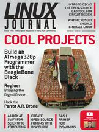

Shutdown Archive web server
Search:
Linux Journal
Issue #241/May 2014

Features
Hacking the Parrot A.R. Drone
by Bill Childers
Check out the potential for this semi-autonomous, largely automated quadracopter.
Cross-Breeding the BeagleBone Black with the ATmega328p
by Joshua Datko
How to build up the hardware from basic components and configure the software to transform the BeagleBone into an ATmega328p programmer.
Reglue: Opening Up the World to Deserving Kids, One Linux Computer at a Time
by Brian Conner
Reglue gives free Linux computers to under-privileged children and their families.
Indepth
Oscad: Open-Source Computer-Aided Design Tool
by Rakhi R and Kannan M. Moudgalya
Introducing Oscad, an open-source CAD tool for circuit design, simulation, analysis and PCB design.
Columns
Reuven M. Lerner's At the Forge
Discourse
Dave Taylor's Work the Shell
Iterating Turns in
Zombie Dice
Kyle Rankin's Hack and /
Tails above the Rest, Part III
Shawn Powers' The Open-Source Classroom
Hulk Bash!
Doc Searls' EOF
A Cool Project for Microsoft: Adopt Linux
In Every Issue
Current_Issue.tar.gz
Letters
upFRONT
New Products
Archive Index
Shutdown Archive web server
Search:
Copyright © 1994 - 2018
Linux Journal
. All rights reserved.